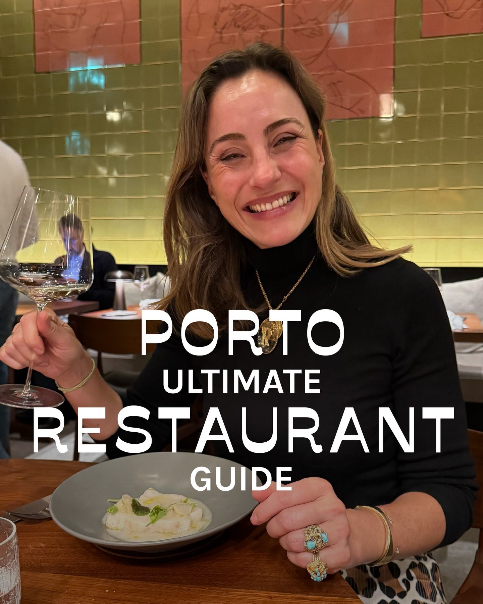
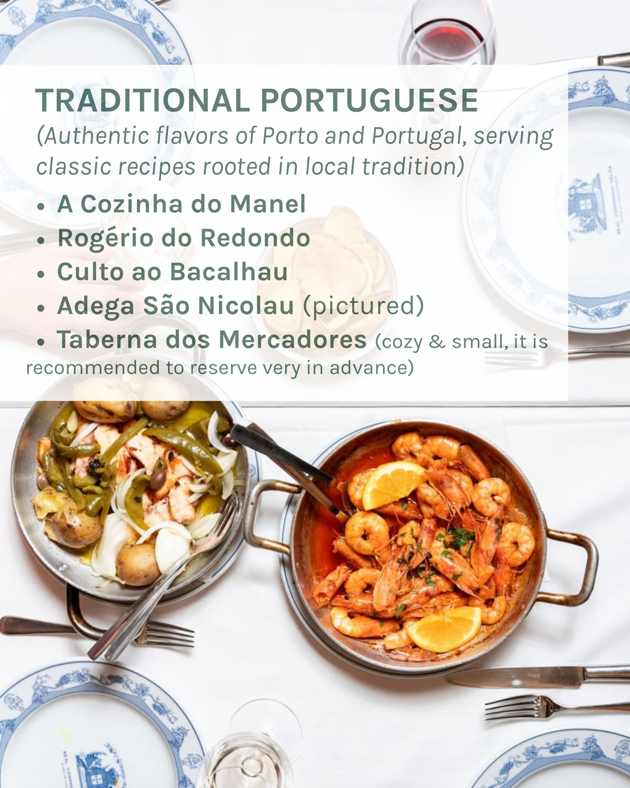
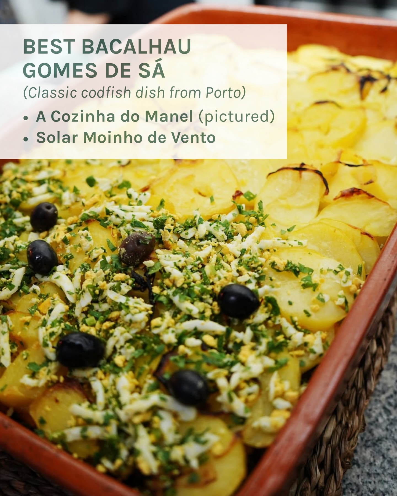
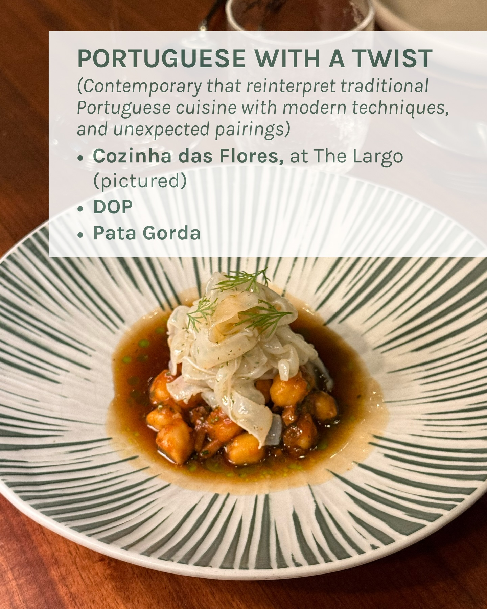
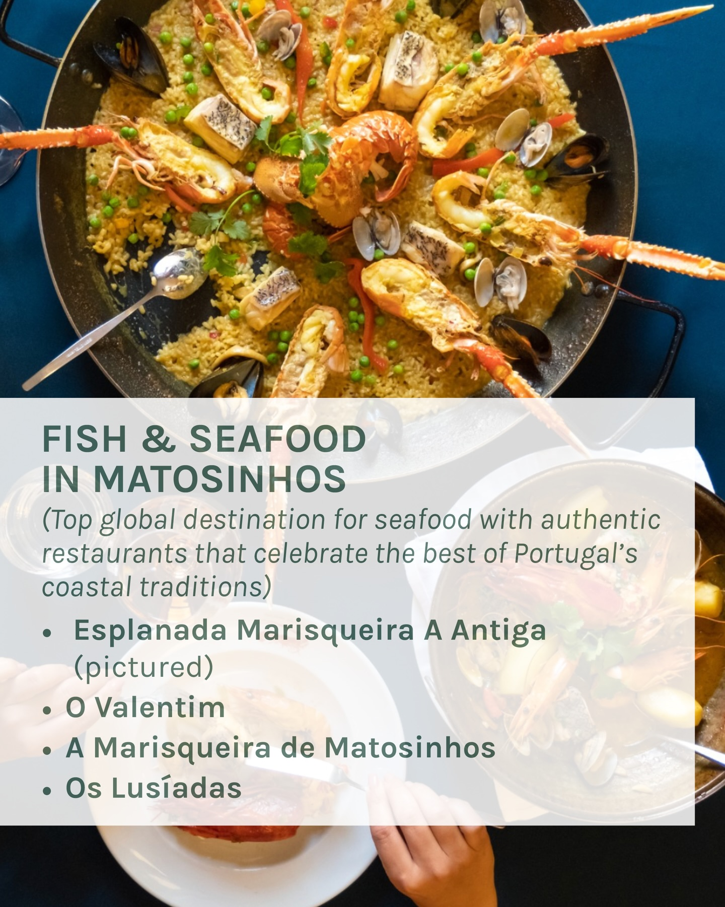
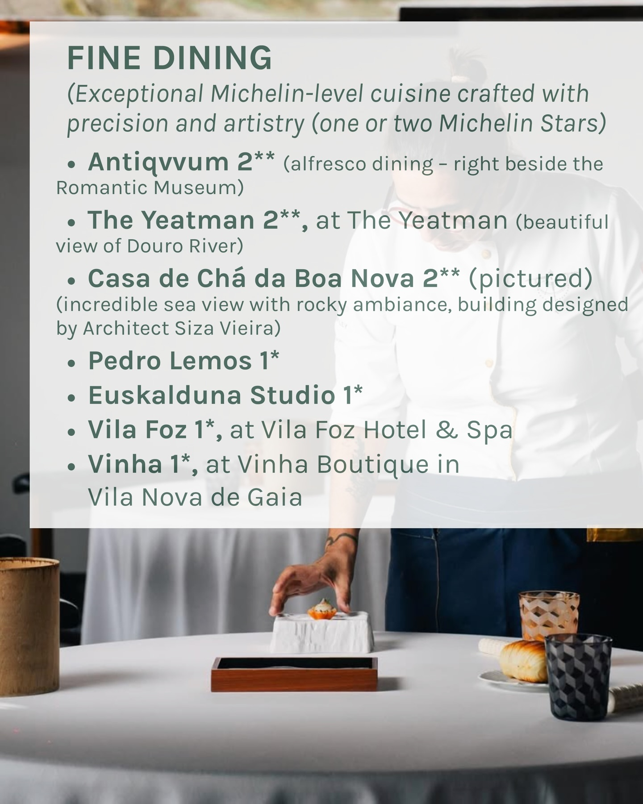
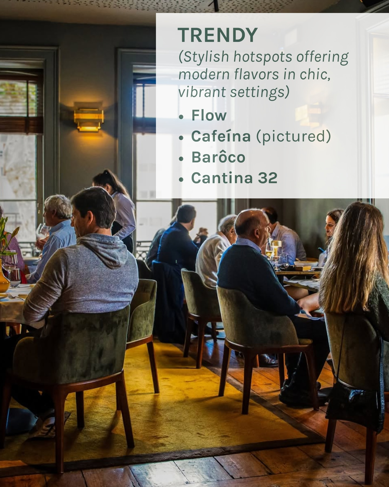
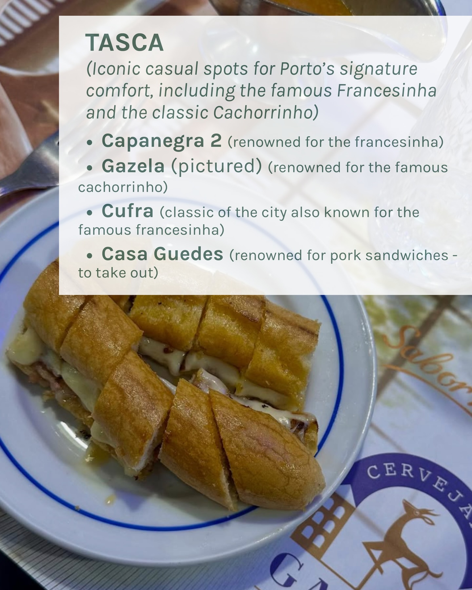
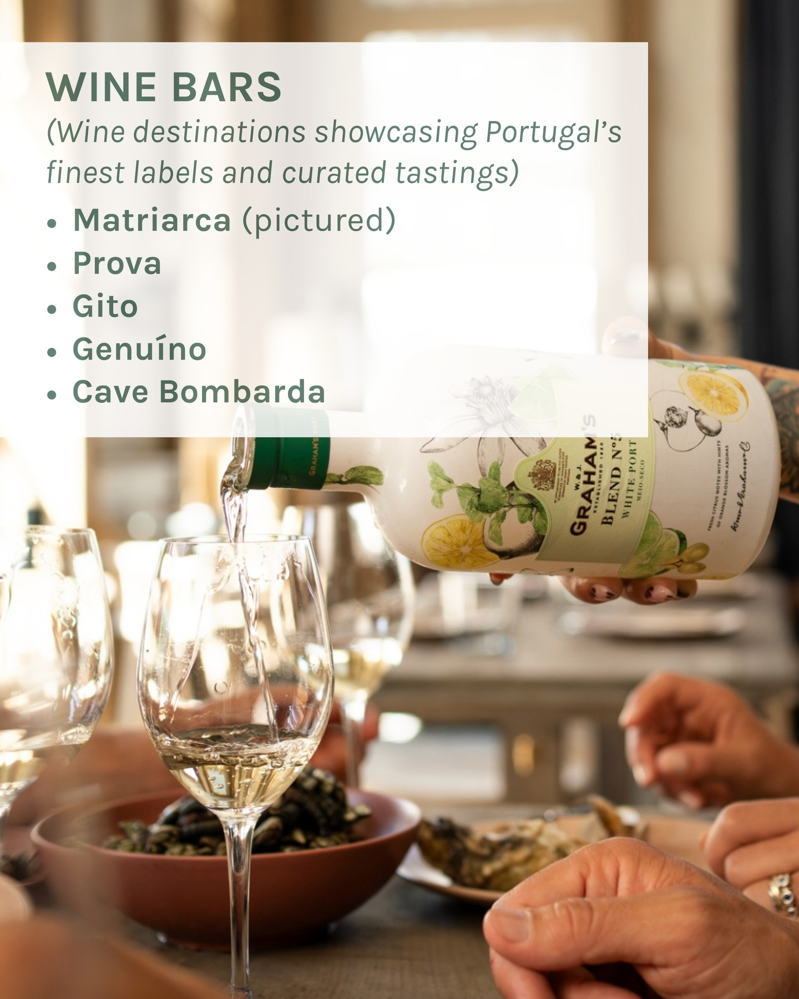

Instagram Post

PORTO ULTIMATE RESTAURANT GUIDE
carousel (10 slides) (enriched by ClaudeClaw)
Summary
PORTO ULTIMATE RESTAURANT GUIDE | PORTO ULTIMATE RESTAURANT GUIDE | TRADITIONAL PORTUGUESE (Authentic flavors of Porto and Po... | BEST BACALHAU GOMES DE SÁ (Classic codfish dish from Port... | PORTUGUESE WITH A TWIST (Contemporary that reinterpret tr... | FISH & SEAFOOD IN MATOSINHOS (Top global destination for ... | FINE DINING (Exceptional Michelin-level cuisine crafted w... | TRENDY (Stylis...
1
PORTO ULTIMATE RESTAURANT GUIDE
A smiling woman in a black turtleneck holds a wine glass at a restaurant table with a dish in front of her, while other diners and restaurant decor are visible in the background.
2
PORTO ULTIMATE RESTAURANT GUIDE
A smiling woman in a black turtleneck holds a wine glass at a restaurant table with a dish of food in front of her, while other diners are visible in the background.
3
TRADITIONAL PORTUGUESE (Authentic flavors of Porto and Portugal, serving classic recipes rooted in local tradition) • A Cozinha do Manel • Rogério do Redondo • Culto ao Bacalhau • Adega São Nicolau (pictured) • Taberna dos Mercadores (cozy & small, it is recommended to reserve very in advance)
A white table is set with blue and white patterned plates, cutlery, and glasses, featuring two traditional Portuguese dishes: one with shrimp and orange slices, and another with octopus, potatoes, onions, and green peppers.
4
BEST BACALHAU GOMES DE SÁ (Classic codfish dish from Porto) • A Cozinha do Manel (pictured) • Solar Moinho de Vento
A close-up shot shows a Portuguese codfish dish, Bacalhau Gomes de Sá, with sliced potatoes, chopped parsley, hard-boiled egg, and black olives, served in a rectangular baking dish within a woven basket.
5
PORTUGUESE WITH A TWIST (Contemporary that reinterpret traditional Portuguese cuisine with modern techniques, and unexpected pairings) Cozinha das Flores, at The Largo (pictured) DOP Pata Gorda
A close-up shot shows a dish of chickpeas in a brown sauce topped with white, thinly sliced ingredients and dill, served on a white plate with green striped patterns on a wooden table.
6
FISH & SEAFOOD IN MATOSINHOS (Top global destination for seafood with authentic restaurants that celebrate the best of Portugal's coastal traditions) • Esplanada Marisqueira A Antiga (pictured) • O Valentim • A Marisqueira de Matosinhos • Os Lusíadas
A large pan of seafood paella or rice dish with lobster, prawns, mussels, and clams is shown from above, partially obscured by a white overlay containing text about seafood restaurants in Matosinhos.
7
FINE DINING (Exceptional Michelin-level cuisine crafted with precision and artistry (one or two Michelin Stars) • Antiqvum 2** (alfresco dining - right beside the Romantic Museum) • The Yeatman 2**, at The Yeatman (beautiful view of Douro River) • Casa de Chá da Boa Nova 2** (pictured) (incredible sea view with rocky ambiance, building designed by Architect Siza Vieira) • Pedro Lemos 1* • Euskalduna Studio 1* • Vila Foz 1*, at Vila Foz Hotel & Spa • Vinha 1*, at Vinha Boutique in Vila Nova de Gaia
A person's hand places a small dish on a white-clothed dining table, which also holds other tableware, while a menu listing fine dining restaurants overlays the top half of the image.
8
TRENDY (Stylish hotspots offering modern flavors in chic, vibrant settings) • Flow • Cafeína (pictured) • Barôco • Cantina 32
People are seated at tables in a restaurant or bar, with a server visible in the background and drinks on the tables.
9
TASCA (Iconic casual spots for Porto's signature comfort, including the famous Francesinha and the classic Cachorrinho) • Capanegra 2 (renowned for the francesinha) • Gazela (pictured) (renowned for the famous cachorrinho) • Cufra (classic of the city also known for the famous francesinha) • Casa Guedes (renowned for pork sandwiches - to take out) Sabor CERVEJA G
A long, sliced sandwich with melted cheese is presented on a white plate with a blue rim, resting on a table with a paper placemat that has a deer logo and text.
10
WINE BARS (Wine destinations showcasing Portugal's finest labels and curated tastings) Matriarca (pictured) Prova Gito Genuíno Cave Bombarda GRAHAM'S PORT W&J. GRAHAM'S ESTABLISHED 1820 BLEND N°1 WHITE PORT MEIO-SECO FRESH CITRUS NOTES WITH HINTS OF ORANGE BLOSSOM AROMAS W. & J. Graham & Co.
A person pours white wine from a bottle labeled "Graham's Blend N°1 White Port" into a glass at a table set with food and other glasses, with multiple hands visible.
All slides







